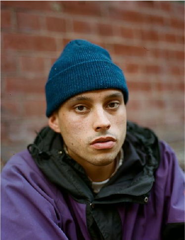

LE FESTIVAL
Le 15 octobre 2023, Vevey célèbre les tendances
actuelles en matière d'art urbain et de musique, et rassemble une
communauté de personnes partageant les mêmes intérêts.
Notre
événement offre une variété d'activités pour les visiteurs, notamment
des démonstrations de skate réalisées par des
professionnels, des ateliers de graffiti interactifs,
expositions d'œuvres d'art urbain innovantes et
des performances musicales d'artistes locaux et
internationaux .
Notre objectif est de créer un espace
pour que les artistes de rue et les amateurs de culture urbaine
puissent se rencontrer, partager leur savoir-faire et leur passion
pour l'art urbain et s'immerger dans une ambiance urbaine unique.
Notre festival propose également une sélection de stands de
restauration proposant une cuisine de rue authentique pour ravir les
papilles des visiteurs.
TAGS
GRAFFITI
STREET ART
09h00-11h00
Sessions libres
10h00-12h00
Atelier de graffiti interactif avec
Dark mimi
13h30 – 17h00
Démonstration de Manos68
et sessions libres
Nous sommes ravis de présenter notre invitée d'honneur pour le Street Jam Festival, la célèbre graffeuse Dark mimi.
Originaire de Fribourg, Dark mimi a commencé à expérimenter avec les bombes aérosols à l'âge de 14 ans et a depuis créé une réputation internationale pour son style unique et expressif. Son travail est influencé par la culture hip-hop, la street culture et l'art urbain contemporain, et est souvent caractérisée par des couleurs vives, des formes organiques et des détails saisissants.
Dark mimi est une figure emblématique de la scène graffiti, et son travail a été présenté dans des expositions du monde entier. En plus de son travail de graffeuse, elle est également un mentor pour la jeune génération d'artistes urbains, organisant des ateliers et partageant son expérience avec la communauté.
Nous sommes honorés d'accueillir Dark mimi en tant qu'invitée d'honneur de notre festival urbain annuel, et nous sommes impatients de voir son talent en action lors de notre atelier de graffiti interactif. Les participants auront l'occasion d'apprendre directement d’elle, de découvrir son processus créatif et de s'inspirer de son travail unique.
SKATE
09h00-10h00
Inscriptions et accueil des
participants
10h30-11h30
Atelier d'initiation au skateboard
pour les débutants
11h30-12h30
Session de skateboard libre pour les
participants
12h30-13h30
Pause
13h30-14h00
Concours de skateboard "Meilleure
figure" pour les participants
14h00-15h00
Session de skateboard libre pour les
participants
15h00-15h30
Démo de skateboard par des
professionnels
15h30-16h30
Atelier de skateboard "Street Style"
pour les skateurs expérimentés
16h30-17h00
Remise des prix pour le concours
"Meilleure figure"
17h00
Fin de la journée
Veuillez noter que les horaires sont donnés à titre indicatif et peuvent
être sujets à des changements.
Les participants seront informés des
horaires définitifs lors de leur inscription à l'événement.
MUSIQUE
15h00-17h00
Atelier de musique urbaine pour les
amateurs de beatmaking et de rap
17h00-23h00
Concert de hip-hop avec des artistes
locaux et nationaux
24h00
Fin de la journée
STREET FOOD
Notre festival vous propose une variété de stands de restauration sur place tout au long de la journée. Vous pourrez notamment découvrir:
Oh my b!
un camion de restauration rapide proposant
des burgers artisanaux avec des ingrédients frais et locaux.
Con cilantro wey
un stand proposant des tacos et
des burritos à la viande grillée ou végétarienne, accompagnés de
guacamole, de salsa et de sauces épicées.
Frankie's Hot Dogs
un stand proposant des hot-dogs
traditionnels, avec une variété de garnitures et des frites fraîches et
croustillantes.
Poke Paradise
un stand proposant des bols de poke
hawaïen, avec du poisson frais, du riz, des légumes, des fruits et des
sauces savoureuses.
La Bretagne ambulante
un stand proposant des crêpes
et des gaufres sucrées ou salées, avec une variété de garnitures comme
des fruits frais, du Nutella, du fromage, des œufs et des légumes.
Smoothies Stop
un stand proposant des smoothies et
des jus de fruits frais, avec des mélanges de saveurs originales et
saines pour une pause rafraîchissante.